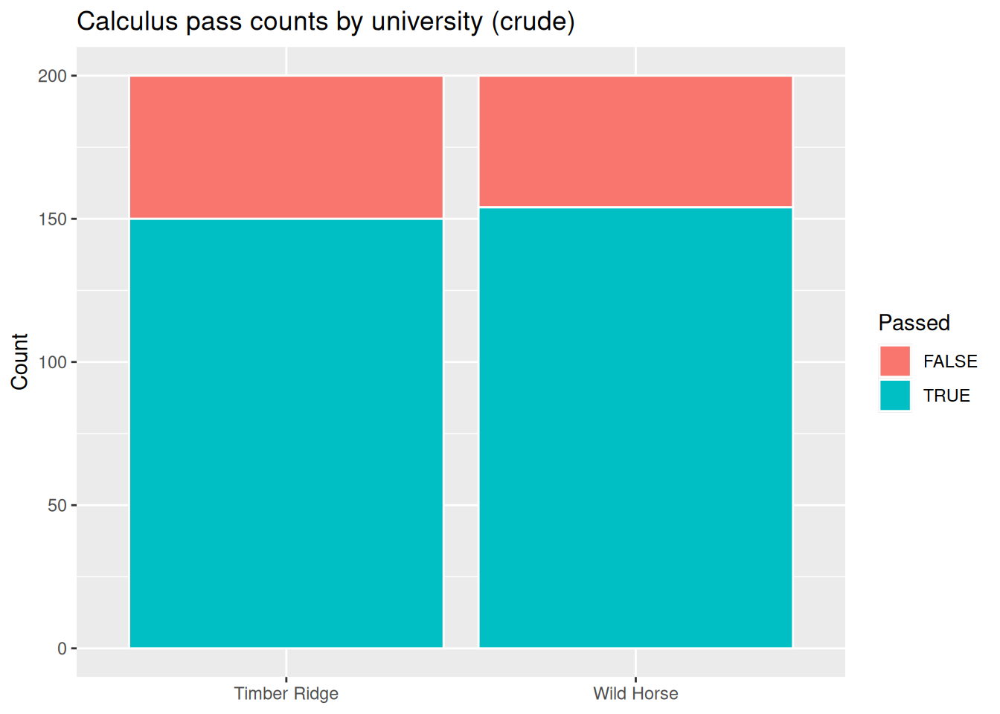

Code
flowchart LR
A[AP calculus in HS] --> U[University]
A --> P[Pass calculus]
U --> Pflowchart LR A[AP calculus in HS] --> U[University] A --> P[Pass calculus] U --> P
STAT 109: Introductory Biostatistics
This lecture demostrate how to do a fair comparison of two groups using the observational study design: the groups exist before you analyze them (which university, sleep habits in the wild, nightlight use, etc.). Lecture 27 gave you tables and plots for two categorical variables; here we connect those tools to causal questions, three competing explanations for any difference, and Causal Directed acyclic graphs (DAGs) and subclassification tell you what to measure and how to compare fairly within levels of a confounder when that is possible.
prop.test() to elimiate chance as an explanation for the observed difference and estimate the causal effect of group membership on the effect of interest.A causal question asks about the effect of something. Name:
| Role | Other names | Meaning |
|---|---|---|
| Response | outcome, dependent | The effect you want to compare. |
| Explanatory | treatment, exposure | The potential cause or group label. |
When writing a research question that is causal, it is best practice to:
Define variables precisely: State how each variable is measured and any cutoffs or rules (e.g. pass/fail, deprived vs unrestricted sleep, income in dollars). Vague labels make design and analysis impossible.
Identify the observational units: The unit is the entity that gets a value for each variable—often one person at one time point for this unit (e.g. one student in one calculus term). Your dataset is usually one row per observational unit.
If the response is numerical, you typically summarize comparison of two groups with means (or medians) and a Welch two-sample t-test** or randomization test on the difference in means (Lecture 29, Lecture 30). If the response is binary (or you reduce an outcome to two categories), you compare proportions or rates and use prop.test / chisq.test or a chi-square shuffle applet (this lecture, Lecture 30).
Note: Project 4 will asks you to plan a study to answer a causal question from one of your classamtes.
In an observational study, researchers record which group each unit is in; they do not randomly assign the explanatory variable. Examples: students choose a university; parents choose nightlight use for their children; people decide what to eat for lunch.
A difference in sample proportions or means from an observational study can reflect:
Lecture 29 covers RCTs, where random assignment is used to balance confounders in expectation and support causal conclusions about the assigned treatment (with the usual caveats).
Students often confuse random assignment (group assignment within the sample) with random sampling (selection of individuals from a population): both are useful, but for different goals. Random assignment is used to adjust for confounding between the groups, making a comparison between the groups more fair. Random sampling is used to elimated bias when generalizing from the study data back to a larger population.
Suppose a certain state has two polytechnic universities and the Chancellor’s Office is trying to decide which one is doing a better job teaching calculus to incoming freshmen.
This example is a modification of a story in Pearl, Judea, and Dana Mackenzie, The Book of Why: The New Science of Cause and Effect (Basic Books, 2018).
Both universities have a calculus class of 200 students. The number (and percentage) of students who passed is:
| Passed calculus | |
|---|---|
| Timber Ridge | 150/200 (75%) |
| Wild Horse | 154/200 (77%) |
Wild Horse has more students who passed in this cohort (154 vs 150).
| AP calculus | No AP calculus | Combined | |
|---|---|---|---|
| Timber Ridge | 45/50 (90%) | 105/150 (70%) | 150/200 (75%) |
| Wild Horse | 136/170 (80%) | 18/30 (60%) | 154/200 (77%) |
Each cell shows number who passed / number of students in that cell.
Read down each column (holding preparation fixed):
So within each preparation level, Timber Ridge does better.
| Used tutoring center on campus | Did not use tutoring center | Combined | |
|---|---|---|---|
| Timber Ridge | 86/120 (71%) | 64/80 (80%) | 150/200 (75%) |
| Wild Horse | 65/90 (72%) | 89/110 (81%) | 154/200 (77%) |
Within “did not use tutoring,” Wild Horse’s pass rate is slightly higher (81% vs 80%). Within “used tutoring,” Wild Horse is also slightly higher (72% vs 71%). But does this breakdown make a fair comparison between the two universities?
We should not treat the tutoring breakdown as the right way to fairly compare the causal effect of which university a student attends when tutoring centers are part of what the university provides. If we do breakdown the rates by tutoring or not, we’d remove part of how the university affects success: the tutoring center is on the causal pathway from university to passing, not merely a pre-enrollment mix of students like AP preparation in high school.
When people see tables like these (even faculty audiences), votes are often split on “which school is better.” Causal DAGs are an easy way to see that AP calculus behaves like a confounder you may want to condition on for a fairer comparison of universities, while tutoring center use is not the same kind of adjustment target if tutoring is part of the university’s effect.
A confounder (for the effect of explanatory variable \(X\) on response \(Y\)) is a variable that influes both** \(X\) and \(Y\).
Example: AP calculus in the story above confounds university and passing because it influenes both where students enroll and how likely they are to pass.
Example: Nightlight and myopia: genetics and parental myopia may confound nightlight use and child myopia.
DAG recap. Nodes = variables. Directed edge \(A \rightarrow B\) = “\(A\) is posited to help cause \(B\) in this simplified story.” Acyclic = no directed cycles.
Backdoor path (informal definition). For the causal effect of university \(U\) on passing \(P\), a backdoor path is a non-causal route that “leaks” association into the crude \(U\)–\(P\) link—e.g. \(U \leftarrow A \rightarrow P\) when \(A\) is AP calculus.
An adjustment set (backdoor adjustment, introductory version) is a set of variables you condition on (here, mainly subclassification: compare universities within levels of \(A\)) so that, if the DAG is correct and other assumptions hold, the conditional comparison is less biased for the effect of \(U\) on \(P\).
The figure below is a DAGitty graph for this teaching example (university, preparation, tutoring, passing, and related variables as you drew them in class). Use DAGitty to reopen the model and highlight adjustment sets under your assumptions.
flowchart LR
A[AP calculus in HS] --> U[University]
A --> P[Pass calculus]
U --> Pflowchart LR A[AP calculus in HS] --> U[University] A --> P[Pass calculus] U --> P
flowchart LR
U2[University] --> T[Tutoring center use]
U2 --> P2[Pass calculus]
T --> P2flowchart LR U2[University] --> T[Tutoring center use] U2 --> P2[Pass calculus] T --> P2
Under the AP DAG, the appropriate breakdown for comparing universities on pass rates while addressing that backdoor is the AP vs no AP table—not the tutoring table used as if it were the same kind of confounder.
| AP calculus | No AP calculus | Combined | |
|---|---|---|---|
| Timber Ridge | 45/50 (90%) | 105/150 (70%) | 150/200 (75%) |
| Wild Horse | 136/170 (80%) | 18/30 (60%) | 154/200 (77%) |
| Used tutoring | Did not use tutoring | Combined | |
|---|---|---|---|
| Timber Ridge | 86/120 (71%) | 64/80 (80%) | 150/200 (75%) |
| Wild Horse | 65/90 (72%) | 89/110 (81%) | 154/200 (77%) |
Before adjusting, ask: Did we include every variable that needs to be in the story, that is, every common cause or fork that links university, passing, and other measured variables? Residual confounding from unmeasured variables is always possible.
You can trace backdoor paths on the board and list a set of variables to condition on, or use DAGitty under an assumed graph to suggest adjustment sets.
To make a fairer comparison of calculus passage rates across universities—if you accept a DAG like the one above (and usual positivity / correct functional-form ideas we skip in this intro), we would want data on student motivation, socioeconomic status (SES), and AP calculus (and university and pass/fail), then compare universities within levels of the variables in the adjustment set you defend. AP alone is already enough to change the story in this toy example; thinking about the data we don’t have on motivation and SES reminds us that real policy questions usually need datasets with more variables.
Hypothesis tests and p-values address explanation (2) only: could the data look like this by chance alone? That is, what would we expect to see if there were no causation or confounding model? A p-value does not, by itself, choose us choose between (1) causation and (3) confounding.
From the applet collection:
For binary outcomes (pass/fail, infected or not) compared across two groups, common large-sample tools are prop.test() (equivalent 2×2 logic to a z-test for two proportions) and chisq.test() on the contingency table of counts. Conditions:
$expected. If violated, use simulate.p.value = TRUEif (!requireNamespace("tidyverse", quietly = TRUE)) {
install.packages("tidyverse", repos = "https://cloud.r-project.org")
}
library(tidyverse)
uni_crude <- tibble(
university = rep(c("Timber Ridge", "Wild Horse"), c(200, 200)),
passed = c(rep(c(TRUE, FALSE), c(150, 50)), rep(c(TRUE, FALSE), c(154, 46)))
)
tab_uni <- table(uni_crude$university, uni_crude$passed)
tab_uni
FALSE TRUE
Timber Ridge 50 150
Wild Horse 46 154Two-sample proportion test:
prop.test(x = c(150, 154), n = c(200, 200), correct = FALSE)
2-sample test for equality of proportions without continuity correction
data: c(150, 154) out of c(200, 200)
X-squared = 0.2193, df = 1, p-value = 0.6396
alternative hypothesis: two.sided
95 percent confidence interval:
-0.10368381 0.06368381
sample estimates:
prop 1 prop 2
0.75 0.77 Chi-squared test of independence (check expected counts first):
cq <- chisq.test(tab_uni)
cq$expected
FALSE TRUE
Timber Ridge 48 152
Wild Horse 48 152cq
Pearson's Chi-squared test with Yates' continuity correction
data: tab_uni
X-squared = 0.12336, df = 1, p-value = 0.7254uni_crude |>
count(university, passed) |>
ggplot(aes(x = university, y = n, fill = passed)) +
geom_col(color = "white") +
labs(
title = "Calculus pass counts by university (crude)",
x = NULL,
y = "Count",
fill = "Passed"
)
Interpretation: A large or small p-value for speaks to only whether this data is consistent with a by chance explanation, not to whether attending Wild Horse causes a higher pass rate.